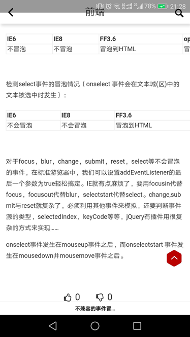

事件捕获阶段：事件从最上一级标签开始往下查找，直到捕获到事件目标(target)。
事件冒泡阶段：事件从事件目标(target)开始，往上冒泡直到页面的最上一级标签。
不冒泡的事件 事件委托

事件委托，通俗地来讲，就是把一个元素响应事件（click、keydown......）的函数委托到另一个元素
Apply call 改变this指向 call()接受的是一个参数列表，而apply()接受的是一个数组参数，call和apply都是对函数的直接调用，而bind方法返回的仍然是一个函数，因此后面还需要()来进行调用才可以